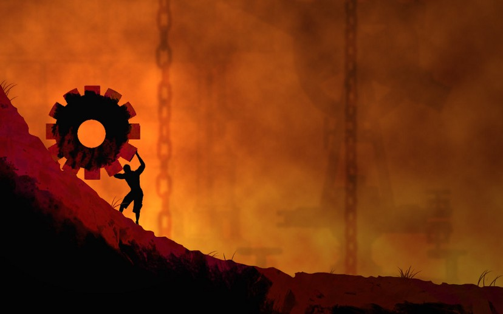
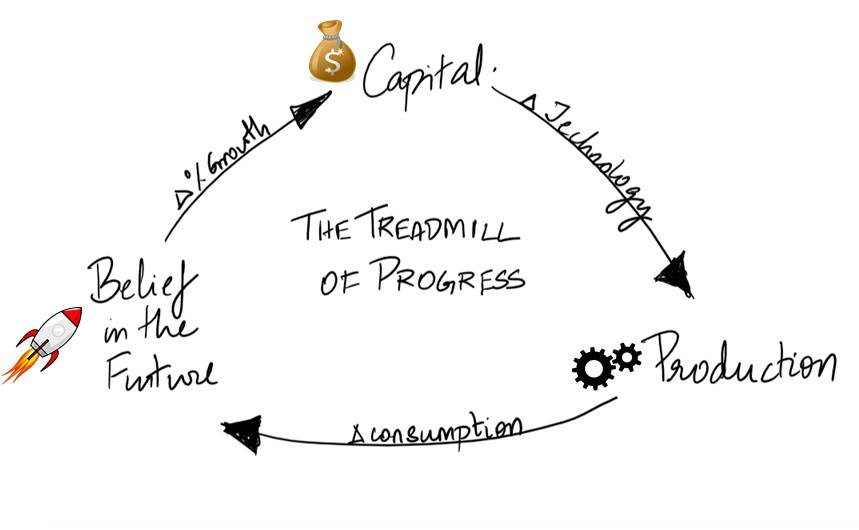

The Tyranny of Progress
We live in the 21st century — at the very pinnacle of human progress. Just 150 years back, average life expectancy in the world was 30 years, compared to 72 years today. Less than 10 percent of humanity lives in extreme poverty. Average income in the world, which stood at $2.80 in 1800 is around $40 today. We have never lived in a more peaceful and plentiful world. In the bargain we have abolished slavery and installed democratic governments in most parts of the world. Technology helps us achieve in a day what our predecessors did only through years of labour. We have physical and virtual robots to do our bidding, running on microprocessors that double in speed every 18 months, at a rate faster than Gordon Moore predicted in 1965.
And yet, our lives get busier with every passing year. We are hurtling forward at a pace that is much faster than we ever have. In the 150,000 years of the existence of our species on the planet, we spent about 138,000 years (92%) as hunter gatherers. Tribes of hunter gatherers living today in the inhospitable Kalahari Desert work for 35–45 hours per week — a number that includes hunting once in three days, and gathering food for three to six hours every day. The rest of the time, they indulge in leisure — playing with their children, gossiping and telling each other stories. Foragers living in less harsh areas of the world would have likely had even more leisure. Our oldest ancestors certainly enjoyed a more leisurely lifestyle.
We don’t need to go back 12,000 years to see this trend repeat. It is estimated that labourers in 13th to 16th century England worked for about 30 hours a week, with plenty of breaks in the day and with more than 150 days of leisure. The only time in human history when we definitely worked longer hours than today was at the height of the Industrial Revolution in the mid-nineteenth century, when industrial workers worked for about 70 hours a week. The standard 40-hour work week that we find in today’s affluent countries is a mere return to pre-industrial levels of work.
But before we compare ourselves with ancient foragers or medieval peasants, we must take into account all other forms of work in our daily lives. The average person in the US commutes for about half an hour one-way, so that adds up to an additional 5 hours of commute per week. We dedicate about 1.25 hours of work per day to household chores of cooking, cleaning, paying bills and keeping things in order, which involves about 9 more hours of work per week. In total, our work week including all the little tasks that fill up our lives adds up to around 54 hours. In the developing world, professional work alone can account for 60–80 hours a week. Besides, several world leaders pride themselves on working long hours. At a commencement speech at the University of Southern California, Elon Musk exhorted graduates to work 100 hours a week if they wished to start their own companies.
Why are we still so busy?
Despite the enormous progress we have achieved, we are busy creatures plagued by the persistent need to work long hours on a variety of jobs that leave us feel meaningless. If we have progressed so much on different fronts — economic, technological, social and cultural, why has our quality of work and the quantity of our leisure not seen substantial improvement? If we can get things done more efficiently, where does our time disappear? How does this happen to every generation? Why does an invisible hand seem to prod each of us to run faster than our predecessors? These questions have plagued me for a long time. The objective of this essay is to gather my findings from different places and summarize them.
Through the course of this essay, I use several examples that are based in the United States of America. But their implications are more widespread in today’s globalized world.
The genesis of progress
The Harvard psychologist Daniel Gilbert asserts that ‘The human being is the only animal that thinks about the future.’ He considers this ability the crowning glory of our species — something that no other animal is capable of. He explains how this is made possible due to a recent evolution in our brain called the frontal lobe. This appendage of grey, wrinkled tissue that we developed over the course of the last 2–3 million years was the last part of the human brain to evolve. It enables human beings to be the only animals that care about our future selves, and sacrifice our today for the benefit of tomorrow. The long arm of our projections reaches out to frontiers that lie well beyond our eventual graves. We care about the lives of our unborn children and worry about the legacy that we would leave them behind. We believe in an after-life and write science fiction stories that project forward for decades, centuries and millennia after our ephemeral existence on the planet.
The human brain, it has been written, is an ‘anticipation machine, and ‘making future’ is
the most important thing it does
— Daniel Dennet
The frontal lobe also helps us simulate experiences before we even have them. This enables us to smile as we think about our upcoming vacation to Bali or frown when we think about a dental appointment next week. This is also why we don’t have to make onion flavoured ice-cream or put mayonnaise in our tea to know that either of those brave experiments would end in disaster. No other brain in the animal kingdom comes with the power to simulate an experience. Squirrels bury nuts and bees gather honey for the winter not through conscious decisions in their brains, but through programs that are burnt into their genes. Among humans, saving for the future is a subjective choice. Therefore, we see such a wide difference in attitudes towards saving among different cultures, with people in nations such as Singapore and Ireland saving more than 50% of their income, even as people in the United States and the United Kingdom save less than 20%.
However, the ability to simulate future experiences is a recent feature that we have evolved — we still need to learn how to do it accurately. When people daydream about the future, they imagine themselves to succeed rather than fail. Students in the US believe that they would live longer, have longer marriages and make trips to Europe more often than real world averages. They dream of owning homes and having gifted children while underestimating the likelihood of having heart attacks, being involved in auto accidents or having a drinking problem. Most large projects plans are optimistic and invariably overshoot their budgets and their schedules. More often than not, our simulations of the future turn out to be wrong. They inflate our expectations, and when reality pays a visit at a later date, we are scrambling to live up those expectations, much like a company that promises 25% annual growth to its investors and slaves away for the rest of the year to meet that goal.
Now let us digress to explore one of two turning points in human history. In the 138,000 years we spent as foragers, the future was much the same as the present was. The to-do list for a typical forager was:
- Hunt
- Gather
- Eat
- Socialize
- Repeat
Our tendency to project into the future served us well during these periods. A life of hunting and gathering was simple, with predictable routines. But simple isn’t the same as easy. Every person in those dangerous times had to be equipped with the skills to survive in the wild. A toothache or a bleeding cut could be lethal. Nevertheless, their lives were simple because tomorrow was likely to be quite the same as today and life moved at a walking pace with each person possessing fewer belongings as we take on a typical day-hike.
When we discovered agriculture, we fundamentally changed how we perceived the future. While food supply in a hunter gatherer’s life was dictated by day-to-day chance, growing crops gave us the promise of securing our rations. It is true that the crops we grew were at the mercy of several forces that we did not control — such as the weather, soil conditions, diseases, rampages from pests and pilferage from wild-animals. But we had the choice to do something about several of these factors, such as weeding our crops, planting in regions with stable climates and fencing off our field against animals. In these early agrarian days, the human idea of ‘planning’ was born. Our ancestors had to now make several decisions that would have implications on our future — the choice of crops to grow, the location of farms, cropping seasons, optimal levels of watering, identifying pests and weeds and so on. With the advent of planning, our lives transformed from ‘living for the here and now’ to ‘living for tomorrow’.
But a control over the future did not mean that our lives improved. In fact, the opposite happened in early agrarian societies. A tribe of hunter-gatherers was egalitarian, where every individual enjoyed a better standard of life than the average peasant in a primitive agricultural society. Hunter gatherers put their mental faculties to good use in a variety of complex situations (hunter gatherers had bigger brains than a modern human and were probably smarter on average). On the other hand, an agrarian life was hierarchical, with a handful of people at the top reaping the benefits of the back-breaking labour of the majority. Besides, a peasant’s life in 10,000 BC did not demand much imagination. He had to spend most of his day carrying pails of water and tending to his crops. His work became more mundane, and his living conditions deteriorated as he moved from expansive grasslands to crowded settlements. Life-expectancy plummeted and early peasants developed several diseases from back-breaking labour, unhygienic living conditions and exposure to farm animals. As our settlements grew larger and more crowded, this trend continued to worsen. The life of a peasant in 8000 BC was, on average, far worse than one who lived in the same region in 10,000 BC.
The human collective knows far more today than did the ancient bands. But at the individual
level, ancient foragers were the most knowledgeable and skillful people in history.
— Yuval
Noah Harari
So why did we continue to suffer this degradation? Why did the peasant not throw up his hands and return to the woods and resume a life of hunting and gathering? This is due to an inherent tension that we faced as a species — between the power of the collective and the welfare of the individual. As a collective, an agrarian lifestyle gave us some measure of control over our destinies. It enabled people to specialize in different crafts, create better weapons, raise armies and protect their boundaries. If a tribe of hunter gatherers, which was on average less than 50 people strong, threatened to attack a village with 10,000 inhabitants on their territory, they stood no chance. So they were gradually sidelined to more inhospitable terrains as agrarians colonized the most fertile parts of the world. With increasing size came increasing collective power and a shinier promise of a better tomorrow, which never really arrived for most people. By the time they realized this bluff, their lifestyles had already changed and they could not go back to living how they had 30 years in the past. Does this promise not continue to ring true today? Does it not echo how despite improving on every objective collective metric, our sense of subjective well-being cannot catch up?
I led us down this digression to make a few points:
- Our brains are the only ones that can synthesize a future, but our predictions are often wrong by virtue of being too optimistic
- Limited control over the future is a double-edged sword
- In the long-run, collective power takes precedence over individual well-being
- We are descended of peasants who were bluffed into sacrificing today for the promise of a better tomorrow
For the longest time in our existence, we knew nothing other the present. Around 12,000 years ago, the ability to synthesize a future and a partial ability to control it set a treadmill into motion. Every bit of scientific or technological advancement gives us a little more control over our destinies. The goal of the human race as a collective is to try and make this control absolute. All our advancements through the centuries hint at this — to provide every member of society a structured education and predictable employment, to produce the most amount of cheap goods for a given amount of resource, to increase life expectancy and eradicate epidemics. Each step of the way, we get better at defying our destinies. We term anything that helps us advance towards this overarching goal of absolute control as ‘progress’. Every generation does its bit to get us a little further towards this goal. We all inherit this treadmill at a faster pace than our predecessors did and we, in turn, accelerate it for our successors. The biggest trick the devil ever pulled is to convince us that tomorrow would be better than today.
Along this journey, we have already explored one turning point — where we transformed ourselves from a species of hunter gatherers to a race of settlers. Let us now explore the second turning point, where we put our belief in the future on steroids.
The plot thickens
Why does a bank lend so freely today?
Capitalism is the dominant economic system in the world today. Capital is defined as wealth that is set aside for the purpose of generating more wealth. Most capital is generated by borrowing from investors. Banks are the easiest source of large sums of capital today. But why does a bank lend money so freely? This wasn’t always the case. About 500 years back, few banks existed, and most people were pessimistic about the future. So, they did not lend money as generously as banks do today. The ability to extend credit requires a firm belief in the future. Unless we believed that the future would be better than the present, we would not lend money to an entrepreneur who starts a new business. Every business is built on the premise of solving a problem today that makes tomorrow better, in exchange for profit. In the absence of that promise, no new business can be founded and nobody would lend anybody else money.
Obtaining capital has never been easier than it is today. That is also because our belief in a better future has never been stronger. The manner in which our banks lend money illustrate this fact. A bank in the US is allowed to lend $10 for every $1 that it has in cash. If a bank has cash worth $1 million on its accounts, it is allowed to lend up to $10 million in loans purely based on the trust that this $ 1 million that is lent out will multiply in a propitious future. The US government continues to spend more dollars than it collects as revenues from taxes and duties, in the hope that growth in the future would offset extravagance in the present. In 2018, the US spent $4.11 trillion in its annual budget, while having an income of only $3.30 trillion. The cumulative debt the US government owes to its public is $15.8 trillion — a loan that the US has essentially taken against its own future. While the monetary policies of several countries are not as optimistic as that of the US, the world and its globalized economy lays a high degree of trust on future progress. Of course, this trust in the future isn’t always prudent. That is why, every other decade we run into a global financial crisis that punishes us for our optimism. But it is only a matter of time before we recover, redouble our faith in progress and march on.
As we already know by now, the promise of a better future comes with a heavy price that is often hidden from our present.
Due to the demands of the economic system that keeps our economies afloat, progress goes from being optional to mandatory. Countries now need to grow their GDP at a compounded rate to finance their burgeoning national debts. The world GDP is expected to grow 2.6% this year. Given its meteoric rates of debt, The US economy is is required to grow 3–4% every year. While this percentage may not seem like much, for a country with an economy as large as the United States, it represents an annual GDP growth of about $144 billion. The growth necessary for developing countries can be even higher — at 5% to 7%. Several nations grow today not because they choose to, but because they have to. If the US stops growing for a few years and cannot service its interest payments, its creditors will demand to have their money back and its economy would collapse. Further, the influence of such a collapse will be felt everywhere in the world. Due to globalization and international trade, a policy decision taken in one part of the world often impacts the rest of the world. Almost every nation felt the ripples of the US sub-prime lending crisis of 2008. As the world’s largest economy, when the US sets the terms for international trade and economic cooperation, the rest of the world is forced to follow in step like a marching band.
So how does this affect us as individuals? Well, those national economies are comprised of individual enterprises which also need to grow at a better rate than the average every single year — the same companies that employ us in droves. This need manifests as ambitious annual growth targets towards which every public corporation is expected to report on a quarterly basis. Even as the GDP is expected to grow at 3–7% a year, these companies have targets that are more ambitious in a race to outdo each other and earn a larger share of the market. In fact, several of our most valuable corporations prioritize growth even above the raison d’être of any private enterprise — profit. That leading companies in their respective markets such as Spotify, Tesla and Uber have never yet returned a dollar of profit indicates our fervent faith in the future. These technological startups are all built on the dreams of future earnings and the responsibility of realizing those dreams falls upon the shoulders of the employees of these firms.
Further, this frantic need to grow exponentially raises an important question. Even as businesses, enterprises and nations, produce gargantuan amounts of goods and services, our real needs as individuals are limited. Sure, our material needs have certainly grown since we first wandered out of the jungles, but our basic needs haven’t grown at the same pace as our economies have. If GDP growth depends on burgeoning production of goods and services, who is going to consume them? Enter the magic wand of consumerism. Consumerism is the trick that the global economy pulls on every individual to compel them into consuming more than they really need. The minute we step outside our house or logon to the internet, advertisements tell us about all the myriad ways in which we can spend our money. Between the lines, those advertising slogans whisper to us how we are inadequate without buying those pair of jeans, watching the ‘biggest musical event in town’ or travelling to Sardinia for a vacation. Consumerism makes for a world of cruel irony best illustrated in how the rich today consume salads and smoothies, while the poor are afflicted by diseases of plenty such as heart disease, diabetes and cholesterol. Each year, people in the US spend more money on diets than the amount needed to feed all the hungry people in the rest of the world. Obesity is a double victory for consumerism — firstly, to fatten people by having them consume in excess of their needs, and later sell them diets and medical remedies for the problems they face.
Under the economic system of [industrial society]… we find that a large supply of goods is
produced irrespective of demand, and then a demand is artificially created for goods by means
of clever advertisements.
— J.C. Kumarappa
We now arrive at an interesting cross-road that technology presents in our lives. On the one hand technology helps us do more with less. Technology gets work done faster, with fewer resources and with higher quality. This tendency brings with it the promise of a more leisurely and idyllic lifestyle. And yet, our frantic lives anything but leisurely or idyllic. This is because of what technology enables behind the scenes. No force in human history has given us more control over the future than technology has. The better technology gets, the more trust we lay on the future, the easier it is to secure credit, the higher we are expected to grow and the faster we are forced to move. Most entrepreneurial ventures today are based on the use of technology to generate future profit, towards which banks and venture capitalists alike lend lavishly. Sure, the market makes corrections against our unfounded optimism like it did during the internet bubble of 2000. But the overall direction of this trend is clear — to surge forward with better technology, cheaper credit, higher growth targets and a faster life. In summary, the global economic system requires people to run on treadmills at an increasing pace — both as consumers and producers. While technology enables us to run faster, it surreptitiously increases the speed of the treadmills on which we are running as well.
As we have seen before, the global economic system requires us to be voracious producers (as employees) and buyers (as consumers) to stay afloat. Let us explore both these roles and their problems in more detail.
The worship of consumption
The problem of consumption is an old one and all old problems have old solutions. Stoic philosophers, who date back to the ancient Greek and Roman empires, often guarded us against the perils of consumerism. Once every month, the stoics, who often had access the highest standards of living in ancient Greek and Roman society, deliberately restricted themselves to the barest of necessities for a few days. In those days, they volunteered to live the life of a poor person. In a bid to understand what was most essential to their lives, they stripped themselves of the superficial and fleeting joy that consumption of material objects brought to their lives. In the process, they learnt not to be fearful of poverty. They realized how a life of penury wasn’t as bad as their imagination would have them believe. They advocated a deep understanding of what simple living meant.
Set aside a certain number of days, during which you shall be content with the scantiest and
cheapest fare, with coarse and rough dress, saying to yourself the while: ‘Is this the condition
that I feared?’
— Seneca the Elder
Another source of inspiration takes us to Henry David Thoreau’s small cabin in the woods off the city of Concord, Massachusetts in the United States. In 1860, at a time when the Industrial Revolution was at its peak, Thoreau found himself disillusioned with modern life. Thoreau lamented how work and consumption was taking over people’s lives and wished to restrict his material needs to the barest of essentials so that he can dedicate all his remaining time and attention to his spiritual pursuits. At the age of 28, Thoreau removed to a pond in the woods where he built himself a simple cabin by hand for a mere $28.5 (less than $1000 in today’s money). In that cabin, he proceeded to live as simply as he could for about two years. Thoreau wished to find out how much work it really took to live with life’s simplest necessities. Throughout his stay in the cabin, he kept stringent accounts of every dollar he spent and ever hour he worked. He concluded that he needed to work for only one day a week and could devote the remaining six days to spiritual pursuits of exploring the woods, connecting with nature and writing.
I went to the woods because I wished to live deliberately, to front only the essential facts
of life, and see if I could not learn what it had to teach, and not, when I came to die, discover
that I had not lived.
— Henry David Thoreau
To put that in perspective, when the people of his time were slaving away for 60 hours or more in factories, Thoreau needed only a day of labour to work for a respectable sustenance. He mentioned how people seldom thought why they had to work so hard, or whether they needed that latest widget in their homes. Thoreau asked that we account everything we bought in terms of how much ‘life’ it took away from us. One might save two hours by travelling to town in a horse-drawn carriage instead of walking. But to be able to own and maintain that carriage for the trip might require the wages from an entire day of labour. In Throeau’s manner of accounting, walking is more efficient despite being slower. Sure, horse-drawn carriages are fast and Venetian blinds are pretty. But even as people toiled hard to be able to afford them, they didn’t often think about what their material possessions took away from their lives.
The stoics and Thoreau, through their lives and teachings, demonstrate to us how we can live a full life in the absence of material excess. This ethic repeats itself in every major religion in the world. Buddhist philosophy tells us that the aim of all natural beings is to maximize their own well-being while minimizing the consumption of material resources. Mother nature is parsimonious. And yet, in modern times, we have inverted this logic by seeking to maximize material consumption even at the cost of well-being of our species and the planet. Contemporary research shows us how this isn’t working. In 1993, the psychologist David G. Myers demonstrated how having more money does not necessarily bring about greater subjective well-being. His calculations show that although the adjusted value of after-tax personal income in the United States has more than doubled between 1960 and 1990, the percentage of people describing themselves as ‘very happy’ has remained unchanged at around 30%.
A culture of rampant consumption is a newfangled idea. Our culture qualifies individuals solely on the basis of their material wealth. Every day we report on the ‘net-worth’ of our wealthiest individuals. Such a concept — a feature of the last 100 years — would have been preposterous in every era of the past. In 1970, the Swedish economist Staffan B. Linder demonstrated how a person who only responds to material rewards loses the ability to derive happiness from other sources. He wrote how ‘the struggle for affluence has created a harried leisure class, a nation of materialistic status-seekers so overestimated in the pursuit of wealth that the primary pleasures of life — love, family, community, physical pleasure and so on, increasingly elude them.’ The accumulation of material wealth shares several parallels with addiction. Like an addiction, the accumulation of material wealth enhances one’s standard of life at first. Therefore, individuals assume that more of it must be a good thing. But our needs constantly increase in step with the dosage and like most things, whatever is good in a small measure can often turn out to be harmful to us in larger quantities.
Historically, we have always celebrated frugality as the remedy to the problem of consumption, but modern society would have none of it. John Kenneth Galbraith had identified the major reason for the world’s silence with regard to consumption — the ideological ‘worship of the Great God Growth’. Any device or regulation that interfered with the supply of more and better things is resisted ‘with unreasoning horror, as the religions resist blasphemy, or the warlike pacifism’. Neither the stoics, nor Thoreau are as widely celebrated as Kim Kardashian or Justin Bieber today. Minimalists are branded hipsters, new-agey and called other names that sideline them from mainstream society. This is only because the constructs of mainstream society would duly collapse if we all lived simply. As individuals, though, if this world-view does not work for us, we have the choice to do differently. It only requires us to examine the fundamental, yet hidden truths based on which modern society functions.
I am convinced, both by faith and experience, that to maintain one’s self on this earth is
not a hardship but a pastime, if we live simply and wisely.
— Henry David Thoreau.
Thoreau wrote how his most essential needs fit into four simple categories — food, clothing, shelter and fuel. Every other need was peripheral and could be minimized. But we do not need to go to a faraway cabin in Massachusetts to discover this ethic. It prevails among in the financial prudence that our religious texts command and most middle-class families enshrine in their simple living. It manifests as the anti-consumerist movements of minimalism and sustainable living that are sweeping the modern world. It is poetic that stoic philosophy is gaining prominence in Silicon Valley today, the veritable hub of our world’s culture of progress. As consumers, when you realize that $1,500 a month is sufficient for a comfortable life, while putting away $500 as savings, any job that offers a net salary of more than $2,000 a month does not have quite the same allure for you. Further, people wouldn’t jump at jobs that offer them four times what they need, while driving them to work 60 hours a week, which leads us to the next problem.
The progressive destruction of work
What goes into making a pin that holds sheets of paper together?
The craft of pin making is more intricate than you may think. It involves eighteen different tasks including drawing the thin wire, straightening it, cutting it, pointing it and grinding the top. The head of the pin requires two or three distinct operations of its own. The head is then installed into the body, and the pin is whitened. All of this work goes into making a single diminutive pin — an intricate craft in itself. Back in the 1760’s, Adam Smith observed the manufacture of pins and mentioned how if one person were to do all these things from beginning to end, he would be, at most, able to make 20 pins a day. However, if the act of making these pin was sub-divided into 18 tasks, which were distributed among 10 men, they could produce more than 48,000 pins in a single day — a rate of about 4,800 pins per person.
Such is the lure of division of labour, that it promises to multiply production to more than 200 times its initial value. It benefits all of humanity to produce more pins and every other widget more efficiently through industrial means. As a collective, we stand to gain. But what do we lose in the trade-off? The fine and intricate art of crafting a pin is reduced to 18 trifling tasks which involve little more than the mechanical and thoughtless movement of one’s limbs. With the establishment of pin-factories, it is no longer viable for blacksmiths to craft individual pins of different shapes and sizes. Homogeneity and standardization take the place of variety, as an intricate, hand-made craft is relegated to mindless work on an industrial assembly line. Here again, in our work-places we see the inherent tension between collective power and individual prosperity. Pope Pius XI quoted how factories improve dead matter, but in the bargain, subject men to corruption and degradation. By dividing labour, we have dehumanized work by shifting our focus to the goods rather than the people that produce them. Moreover, a system that produces pins cheaper and faster accrues more power and drives out competing enterprises.
Fast forward to the 2000’s — more than 200 years after the advent of the Industrial Revolution. Our belief in the future is at an all-time high, reflected in growth targets for countries and companies alike. Most organizations are under the same pressure to grow exponentially in order to stay in step with the global economy does. The demands of capitalism ensure that a failure to embrace this trajectory of growth will see them out of business sooner rather than later. As employees of these organizations, their growth targets become our growth targets. All of this has a direct bearing on how our work is structured. Today, a college student who has never cooked a pack of instant noodles by himself can be trained to work at McDonald’s in a single day — to flip patties, make golden-brown french fries and serve customers a hot meal within 2 minutes of their placing an order. Our own roles within the companies for which we work are no different — it is just that our employer would perhaps need up to two months to replace us with another person or a piece of code, rather than the two days that McDonald’s needs.
Work is viewed by the modern economy merely as a means for production. Economists categorize labour along with land and capital as a ‘factor of production’. From the employer’s view, labour is a cost to be eliminated through automation. We are brought up to view work as toil and drudgery that is not meant to by enjoyable. Ask a schoolchild the opposite of ‘work’, and without a second thought, she would answer ‘play’. Her teacher, and the world at large, teaches her that work and play are meant to be opposites. If play is enjoyable and fulfilling, work is meant to feel like drudgery. Even our language hints at this outlook, whereby employees are termed ‘human resources’. Work is seen as a dis-utility for which we are paid a ‘compensation’ for our sacrifice. The dehumanization of work which started when we stopped hunting and gathering to settle down to toil in its fields has assumed industrial scale in the last two centuries.
The ideal point of view of the employer is to have output without employees, and the ideal from the point of
view of the employee is to have income without employment.
— E.F. Schumacher
But work plays a crucial role in our lives that we do not appreciate enough today. Buddhist philosophy understands work to serve three functions: to give people a chance to utilize and develop their faculties, enable them to overcome egocenteredness by teaming with others towards a common task and create the goods and services needed for a respectable existence. The Ghandian economist and philosopher. J.C. Kumarappa quotes ‘If the nature of work is properly appreciated and applied, it will stand in the same relation to the higher faculties as food is to the physical body. It nourishes and enlivens the higher man and urges him to produce the best he is capable of’. The economist E.F. Schumacher writes how organizing work in a manner that it becomes ‘meaningless, boring, stultifying, or nerve-racking’ for the worker indicates ‘a greater concern with goods than with people’. He further adds that to strive for leisure as an alternative to work is to fail to understand how work and leisure are complementary, and how separating them would mean destroying both the ‘joy of work and the bliss of leisure’.
Yet, this dehumanization of work through division of labour and its demonization in our language are necessary for human progress. Consumerism goes hand-in-hand with this ethic of suffering at work and consuming in excess during periods of leisure. But as we already know, this only leaves us living through lives with a burning sense of emptiness. On looking back at our conventional careers, we all feel this sense of emptiness. The movie Fight Club bases its plot on this widespread feeling. And yet, we are encouraged to put our heads down and go back to work. 20 years of formal education prepare us to run on this professional treadmill for 40 more years, while conditioning us into unquestioning obedience.
Not all jobs are equally destroyed. Some professions still celebrate the creative potential of each of us as individuals, even while performing an economic function. As a rule of thumb, the larger the organization you are employed by, the smaller is the degree of autonomy you have. Your place in the hierarchy matters as well — managers and executives have higher responsibilities towards realizing their firm’s growth and economic targets than the individuals who report to them. Another useful axis to consider is whether the organization earns in the present or the future. Firms that are funded by their own profits have a greater degree of autonomy than the ones which grow rapidly in the hope of turning profitable in the future.
As employees, the most effective means to get off the treadmill of progress is to be self-employed. Aldous Huxley mentioned how small scale or self-employment makes for ‘a more humanly satisfying life for more people, a greater measure of genuine self-governing democracy and a blessed freedom from the silly or pernicious adult education provided by the mass producers of consumer goods through the medium of advertisements.’ Being self-employed gives us the benefit of setting our own growth targets. It gives us some room to decide when we work, where we work and for whom we work. For most people, choosing to be self-employed was extraordinarily hard in the past. However, several paradigm shifts in the modern world has made it easier than ever to work for yourself. About fifty years ago, to start your own enterprise, you needed access to copious amounts of cheap capital. You needed to invest that in large machinery and hope that the stars align in your favour. Today, all you need is a laptop and an internet connection. The internet has already diminished transaction costs to allow people in the gig-economy to work as independent contractors. This phenomenon will only grow with the passage of time.
Self-employment also lets us create organisations which can play by a different set of rules than the ones in the mainstream. This isn’t to say that people who are self-employed are immune to competition or the pressures of the market. But given those realities, self-employed professionals can choose to respond differently. Startups can choose to be bootstrapped — to not receive funding from outside and be in-charge of their own growth and revenue targets. Several organizations have managed to do this successfully. The tech company Basecamp offers a shining example. Contrary to most similar tech companies, Basecamp is self-funded and has few pre-defined goals and metrics. Its founders believe in enabling their teams to do their most fulfilling work within reasonable hours. During the summer months, the 50 odd employees at Basecamp work for as few as 32 hours a week. And most importantly, their founders design their workplace to ensure that work is something that people can enjoy on an everyday basis.
Further, a life of frugality complements self-employment because of lower needs and less pressure to forego a fat, corporate paycheck. In a comprehensive study, the psychologist Daniel Kahneman and the economist Angus Deaton, proved how beyond a household income of $75,000 per year, increase in income has no co-relation to improvement in emotional well-being. While that amount is far more than most people make in the world today, it is also far less than what most of us aspire to make in our professional lives.
Caveats
My first caveat is to mention how I do not believe capitalism to be evil. Capitalism is best employed in bringing progress to the parts of the world that need it the most — places where people have to worry about making ends meet every single day. Nor do I think that big corporations have bad intentions. From the days of the peasant who traded his life of hunting and gathering to settling on a farm, to the CEO who motivates and inspires her workers, we are all in search of a better future. Free-market capitalism rewards labour through profits and weeds out dishonesty and wastage through competition. I am all for compassionate capitalism, but not for capitalism for its own sake.
Secondly, I mention self-employment as a viable alternative to a mind-numbing corporate job. Having said this, I do not imply that being self-employed is easy. To embark on that path, is to offer something to the world that is both rare and valuable — to serve an audience that is under-served and do it better than anybody has done it thus far. Unless you’re lucky, it takes several years of deliberate practice to offer something rare and valuable. While I have mentioned that it is easier today to embark on these pursuits than the past, this also means that several more people are vying for the same opportunity than a few years back. However, most of us fail to realize how this option is available and is becoming more accessible than we think. In order to become self-employed in a few years, now is the best time to start.
Lastly, I don’t decry all progress. It is wonderful that we enjoy longer, more productive and more peaceful lives than any of our ancestors ever did. It is fantastic that as I sit down to write these words, I have to worry neither about where my next meal would come from, nor about the dishes that I have to do after consuming it. The benefits of this progress are apparent to all of us, and as a man who was born into a life of privilege, I enjoy its fruits more than most people around me do. But even as we sing the praise of progress in glorious gospels, its costs are conveniently hidden away from our view. Through this essay, I am only trying to make my small contribution towards rectifying that imbalance.
The treadmill of progress
As humans, our defining trait is our mind’s ability to project into the future. Given this is the most recent development in our brain, we still haven’t learnt to be accurate in our simulations of the future — our projections are invariably more optimistic than reality would allow.
This tendency, scaled up to our global, interconnected world leads us to the spirit of our times — our discontent with the present and our urge to control the future. Even as our future on this planet is threatened, we seek to launch ourselves to other planets. Our grasp over our future lets us generate vast sums of capital, which are then employed into the production of goods and services through the use of cutting-edge technology. We are then persuaded to consume this produce with a voracity that keeps pace with the exponential rate at which we wish for our economy to grow and bolster our faith in our future. To keep this ambitious cycle going, society needs all the help it can muster. Therefore, it tries to recruit every member of our race that is possibly can to run on the treadmill of progress.
This wasn’t a choice we made. Ever since our birth, we have been brought up and groomed to run on the treadmill of progress. Once this treadmill is visible to us, we are faced with a choice — to continue running like we always have, or get off and do something differently. But it is important to recognize that we are empowered with this choice. For the longest time, I wasn’t even aware of it. I wish somebody had broken this essay down into several lessons and taught it to me as a course in high-school. Understandably though, the only lessons we are taught in school are the ones that help us fit into society — not ones that encourage us to challenge its constructs.
The choice we are given here is to redefine richness. The world defines richness in purely material terms. But richness is to maximize our well-being while minimizing our material needs. It is to design our work and leisure to make them enjoyable and fulfilling. It is to embrace the present moment rather than always hanker after an elusive future. In summary, to be rich is to enjoy every step of the journey rather than to suffer through life in pursuit of a promised land that will never come.
***Bibliography (in order of relevance)
- Sapiens — Yuval Noah Harari
- Small is Beautiful — E.F. Schumacher
- Stumbling on Happiness — Daniel Gilbert
- Walden — Henry David Thoreau
- How Much Should a Person Consume? — Ramachandra Guha
- If We Are So Rich, Why Aren’t We Happy? — Mihaly Csikszentmihalyi
- Letters from a Stoic — Seneca
- Rework — Jason Fried and David Heinemeier Hannson
Thanks to Balaji Rao and Amrut Nagasunder for reviewing drafts of this essay.